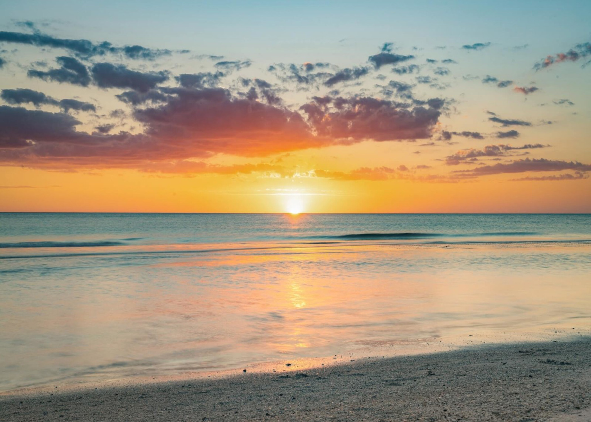

Last year I was a graphic design student, and I learned a lot about creating visuals and making things look creative. This year I’m taking web design, and it’s cool to see how design can work on websites instead of just on paper. I like learning new skills and seeing how the two connect.
I play water polo, and it’s one of my favorite sports because it keeps me active and challenged. It takes a lot of teamwork and energy, but I really enjoy being in the water and competing with my team. Playing water polo also helps me stay strong and focused.
I like hanging out with my friends and family because it’s always fun and relaxing. We do different things together, like going out, talking, or just spending time at home. Being around them makes me happy and gives me good memories.
Copyright © 2025 Elea Hustler